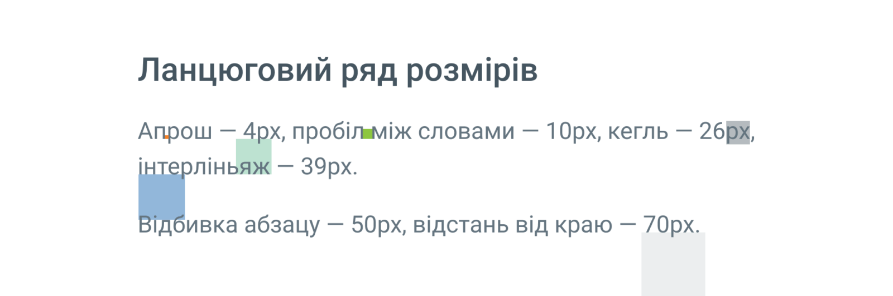
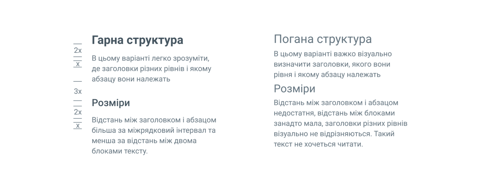
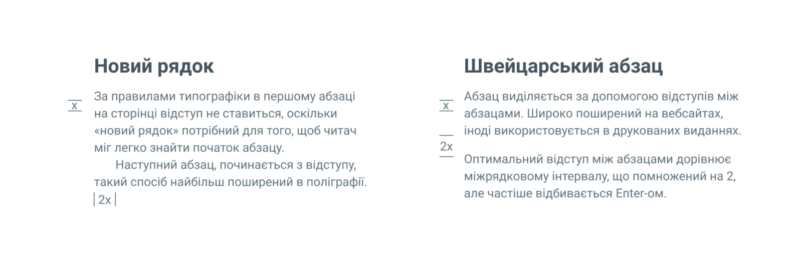
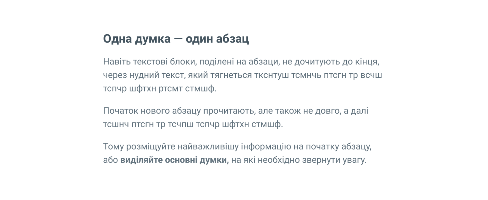
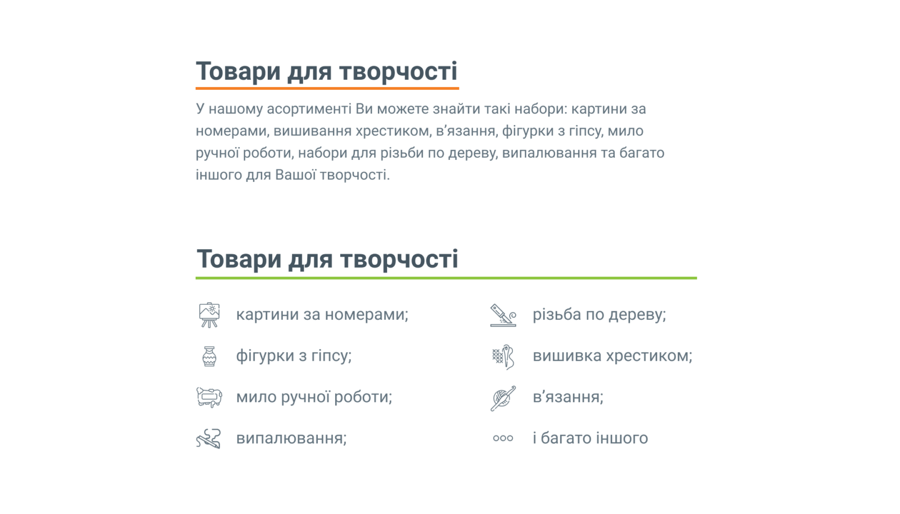
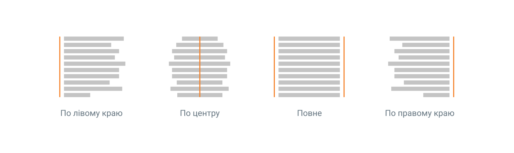
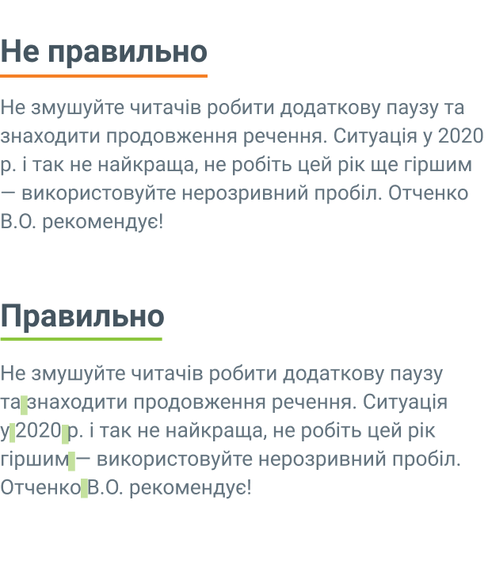
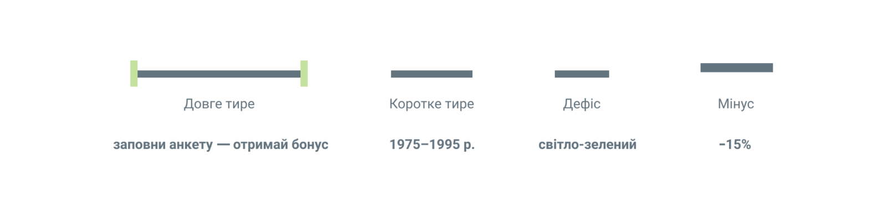
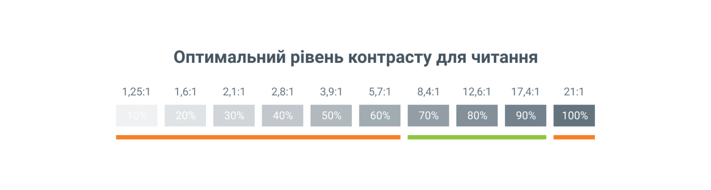
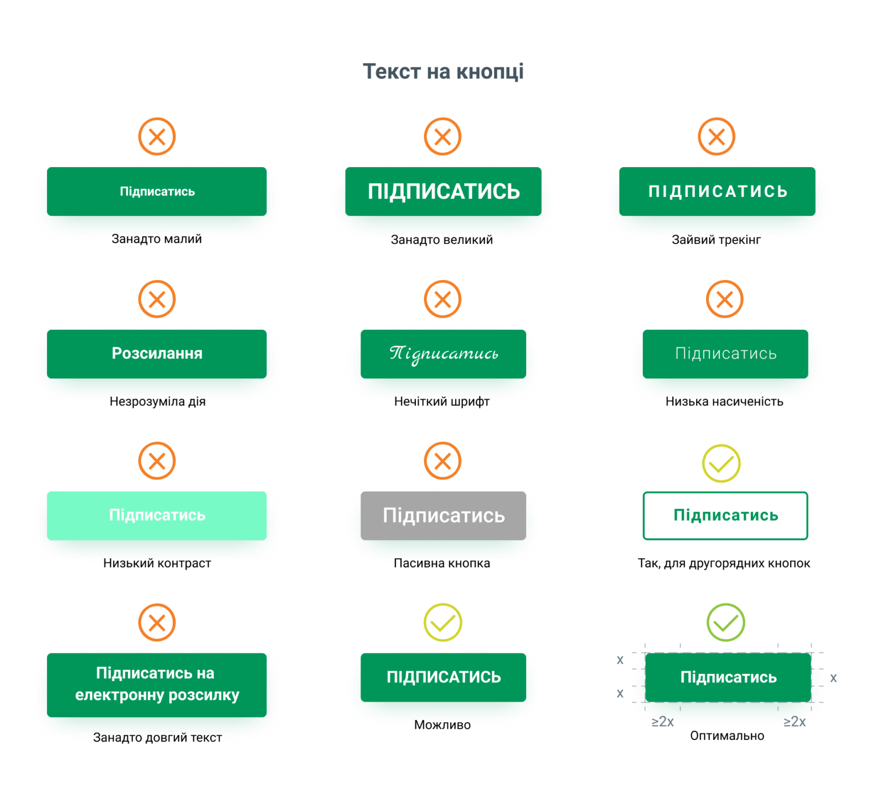

← На головну | Основні положення

Існує одне базове правило, яке гарантовано покращить ваші роботи:
Апрош ≤ Пробіл ≤ Кегль ≤ Інтерліньяж ≤ Відбивка абзацу ≤ Відстань від краю
Кожен наступний розмір в ланцюгу — більший попереднього. Це дозволяє, користуючись одним базовим правилом, одразу підвищити читабельність тексту, повітряність, зрозумілість, покращити візуальне сприйняття полотна тексту.
Заголовок — найважливіший рядок тексту, що коротко описує інформацію в наступних абзацах і підштовхує читати далі саме той абзац, де знаходиться потрібна інформація.
В типографіці заголовки розділяються на рівні (h1, h2, h3…). Якщо порівняти вебсайт з книгою, то заголовок h1 — назва всієї книги, h2 — розділу, h3 — параграфа в розділі і так далі.
Щоб виділити заголовок на фоні іншого тексту, необхідно:
Додатково заголовок виділяють шляхом зміни гарнітури, але не використовуйте більше 2-х різних гарнітур в одному проєкті. Підбирайте контрастні за формою гарнітури:
Структура тексту повинна бути зрозумілою — кожен заголовок приєднаний до свого текстового блоку, при цьому заголовки різних рівнів повинні відрізнятися за розміром.

Абзац — частина тексту, яка виражає закінчену думку. Абзаци відокремлюють один від одного графічно. Найпоширеніші способи створення абзаців:

Великий абзац тексту притягує увагу слабше за набір коротких абзаців. Початок нового абзацу не залишиться без уваги, тому поділіть текст за принципом «одна думка — один абзац».


Інформація подана списком — легше запам’ятовується. Пункти списку виділяють числами, літерами, або ж булітами (графічними маркерами), а інтерліньяж у списках роблять більшим, ніж в абзаці. Найбільш поширені — буліти круглої форми.
Інформація, що подається списком:
Часто буліти замінюють на іконки, які підтримують інформацію в списку. Такий варіант дозволяє користувачам спочатку сприйняти інформацію на іконках, а потім підкріпити її текстом.
Всередині блоків текст може бути по-різному орієнтований, в залежності від поставленого завдання. Основні типи вирівнювання:

Кількість символів в рядку повинна бути в діапазоні 40–70 символів для комп’ютерів та планшетів і 30–40 символів для телефонів. При цьому для текстів на сайті оптимальний кегль 16–20 px.

В кінці рядка читачі мимоволі роблять паузу, тому на кінцях не залишають прийменники та сполучники, оскільки вони безпосередньо пов'язані з наступним словом. Використовуйте «нерозривний пробіл» (сполучення клавіш Alt + 0160), якщо таких ситуацій не уникнути.
На наступний рядок переносять:
Дефіс — найкоротша паличка, яку використовують у складених словах та перенесеннях в тексті (світло-зелений). З боків дефіса не ставлять пробіли.
Мінус (Alt + 045) — числовий знак. Розташовується вище, ніж тире і дефіс, але у типографіці сайтів часто замінюється на дефіс (-15%).
Коротке тире (Alt + 0150) використовують при позначенні інтервалів в датах або часі (1975–1995 р.). З боків також не ставлять пробілів, тому що знак уже має відступи.
Довге тире (Alt + 0151) частіше за все використовують:
Довге тире відбивають тонкими шпаціями, але у типографіці сайтів такі відступи замінюють пробілами.

Ялинки (« ») — головні лапки в наборі українською мовою.
Лапки (“ ”) — другорядні, можна використовувати тільки в тому випадку, якщо всередині цитати потрібно зробити ще одне виділення.
Англійські лапки (‘ ’) — використовують, якщо слово переведено з іншої мови.
Колір тексту і фону також має велике значення. Чорний на білому та білий на чорному — найбільш поширені та оптимальні варіанти, але якщо контрастність кольорів занадто висока, або низька — очі людини швидко втомлюються, все має бути в міру.

Перш за все, кнопка повинна привертати увагу не тільки формою, але і кольором, і текстом. Не будемо розглядати всі стилі кнопок, розглянемо приклади тексту на кнопці:

CAPS — це крик, не потрібно кричати там, де не треба! Такий вид написання підходить для логотипів, невеликих назв і заголовків до 5 слів, зустрічається в кнопках. Великі літери важче сприймаються людьми, ніж малі. Не виділяйте слова в абзаці ВЕЛИКИМИ літерами, якщо це не абревіатура, з більшою ймовірністю читачі звернуть увагу на текст, якщо збільшити насиченість.
Перед публікацією будь-якого тексту — покажіть його іншій людині. Ваш текст чіткий і зрозумілий для Вас, але зовсім по-іншому його сприймають інші люди. Поставте наступні питання:
Відредагуйте текст і покажіть його ще раз. Ситуація покращилась? Вітаю!
© 2026 Kotliarenko Bogdan | КН-24, СТФК НУХТ |